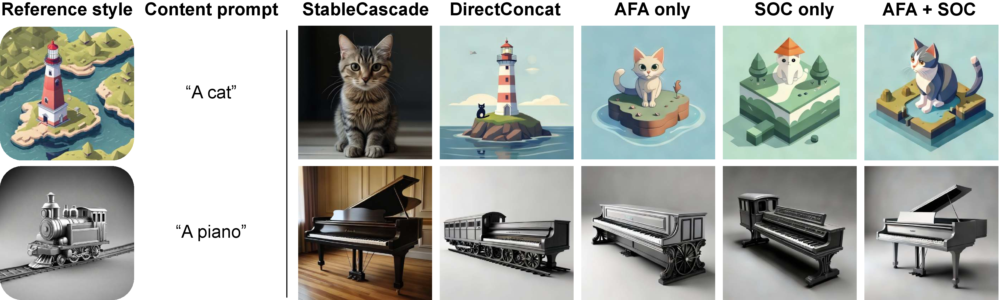

RB-Modulation: Training-Free Personalization of Diffusion Models using Stochastic Optimal Control
CVPR 2024

Large-scale Text-to-Image (T2I) models have rapidly gained prominence across creative fields, generating visually compelling outputs from textual prompts. However, controlling these models to ensure consistent style remains challenging, with existing methods necessitating fine-tuning and manual intervention to disentangle content and style. In this paper, we introduce StyleAligned, a novel technique designed to establish style alignment among a series of generated images. By employing minimal `attention sharing' during the diffusion process, our method maintains style consistency across images within T2I models. This approach allows for the creation of style-consistent images using a reference style through a straightforward inversion operation. Our method's evaluation across diverse styles and text prompts demonstrates high-quality synthesis and fidelity, underscoring its efficacy in achieving consistent style across various inputs.
While producing high-quality images that are aligned with any textual description, state-of-the-art text-to-image models often create images that diverge significantly in their interpretations of the same stylistic descriptor. Given a style description of “minimal origami”, standard text-to-image generation (left) outputs images with significantly different styles. Our method makes the model generation style persistent (right).

Generation of images with a style aligned to the reference image on the left. In each diffusion denoising step, all the images, except the reference, perform a shared self-attention with the reference image.

The target images attend to the reference image by applying AdaIN over their queries and keys using the reference queries and keys. Then, we apply shared attention where the target features are updated by both the target values Vt and the reference values Vr.
Our method enables style-consistent content generation using different prompts without fine-tuning
StyleAligned can be easily combined with other methods.

Generation of images with a style aligned to the reference image on the left. In each diffusion denoising step, all the images, except the reference, perform a shared self-attention with the reference image.

Generation of images with a style aligned to the reference image on the left. In each diffusion denoising step, all the images, except the reference, perform a shared self-attention with the reference image.
The target images attend to the reference image by applying AdaIN over their queries and keys using the reference queries and keys. Then, we apply shared attention where the target features are updated by both the target values Vt and the reference values Vr.
@article{hertz2023StyleAligned,
title={Style Aligned Image Generation via Shared Attention},
author={Hertz, Amir and Voynov, Andrey and Fruchter, Shlomi and Cohen-Or, Daniel},
booktitle={arXiv preprint arxiv:2312.02133},
year={2023}
}
Acknowledgements: We thank Or Patashnik, Matan Cohen, Yael Pritch, and Yael Vinker for their valuable inputs and early feedback that contributed to this work. We especially thank Yael Vinker for providing one of her artworks as a style reference.